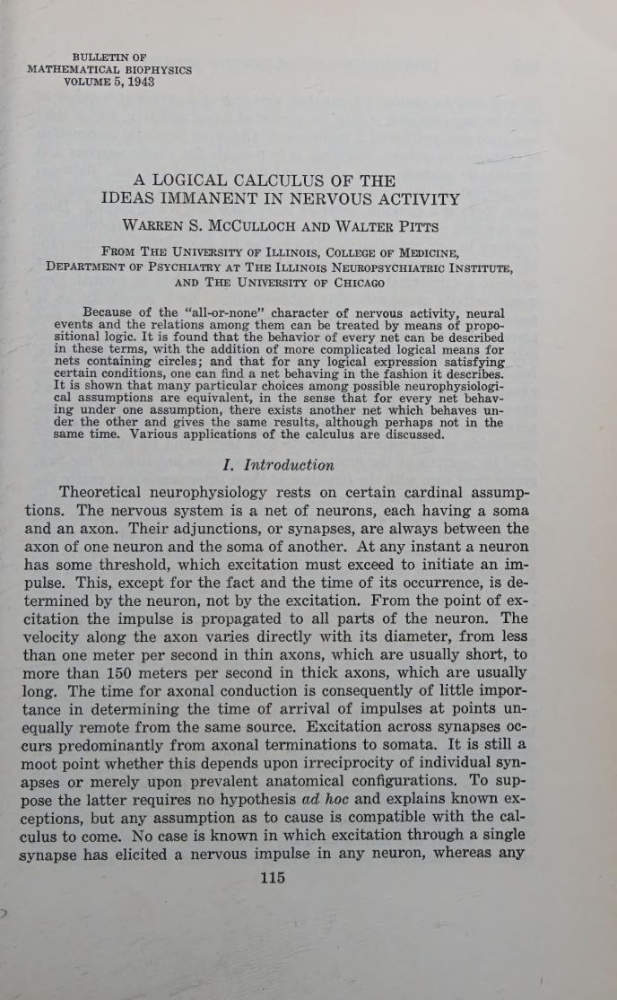
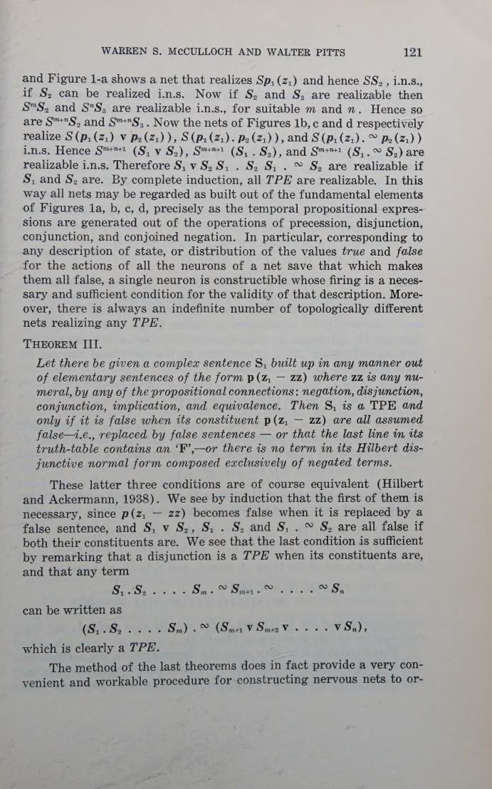
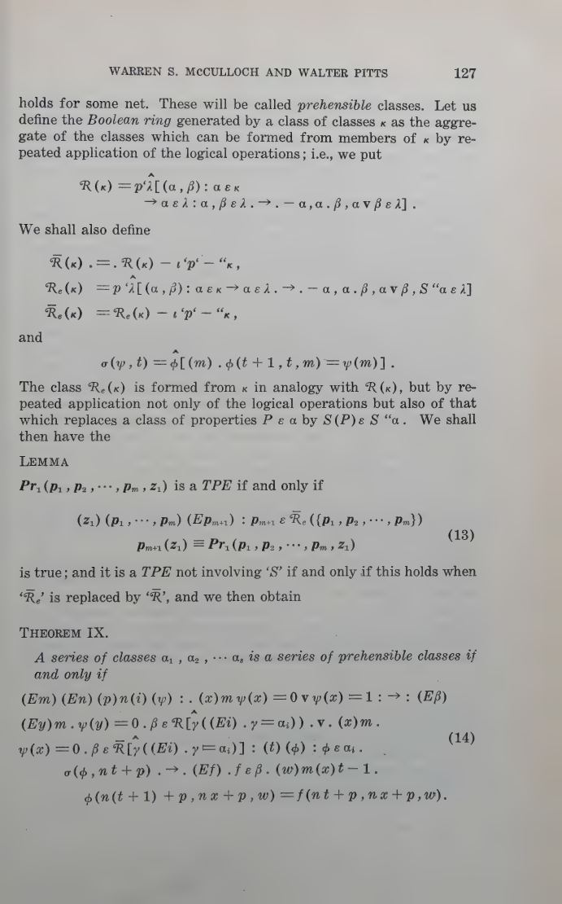
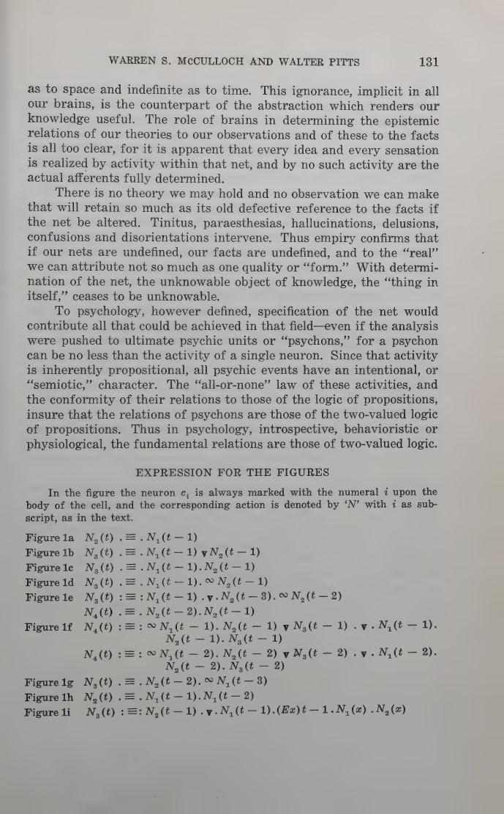

Impulse = proposition
Every nervous event is a two-valued atomic proposition subscripted for the time of its occurrence. Psychology, on this view, has the same fundamental relations as two-valued logic.
Bulletin of Mathematical Biophysics · Vol. 5 · 1943
Warren S. McCulloch and Walter Pitts asked what follows if a nerve impulse is treated as a proposition. The answer is the founding document of neural computation: a calculus in which nets compute logic, circles compute memory, and brains compute only what Turing machines can.
Read the plateThe thesis
The move is disarmingly small. Because nervous activity is all-or-none, each impulse can be read as a truth value: asserts that neuron fires at time . Synaptic convergence then becomes conjunction, alternative pathways become disjunction, inhibition becomes negation, and a threshold becomes a truth condition.
From that translation the paper extracts two directions of proof. Every net without circles can be solved as a temporal propositional expression; every such expression can be realized by a net. Circles add something the open net cannot have: reference to an indefinite past, and therefore memory.
Laboratory 01 · the threshold
The paper's five physical assumptions are almost brutally simple: all-or-none activity, a fixed threshold, synaptic delay as the only significant delay, absolute inhibition, and a fixed net. Move the weights and the threshold. Watch the same soma become AND, OR, A AND NOT B, or a majority gate.
The three inputs cycle through all eight binary states. A filled input is firing now. Excitatory weights are amber; inhibitory weights are red. The output fires when the weighted sum reaches .
| A | B | C | Σ | N(t) |
|---|
The calculus
For a net of order zero — no feedback — the paper proves that each neuron's action can be written as a temporal propositional expression (TPE) built from the peripheral afferents by four operations: precession , disjunction, conjunction, and conjoined negation.
Theorem I solves every order-zero net. Theorem II realizes every TPE. The result is a perfect two-way street between a wiring diagram and a formula — a compiler in both directions, a decade before the word existed.
The paper's equation (1). collects the subsets of excitatory afferents whose sum exceeds the threshold; is the set of inhibitory afferents. The neuron fires at exactly when one admissible excitatory subset is active and no inhibitor is active.
Modern reading. The same neuron as a weighted threshold unit: excites, inhibits, is the threshold. This is the ancestor of the perceptron and of every artificial neuron since.
Laboratory 02 · the circle
Close a chain of neurons into a ring and a single volley can keep circulating. The net now knows that something happened without knowing when. That is the paper's mechanism of memory, and the source of the existential quantifier over past time.
Inject a pulse. With the circle closed, it returns forever; the form survives while its time is lost. Cut the circle and the same pulse leaves the system: the present becomes all the net has.
“The nervous system contains many circular paths, whose activity so regenerates the excitation of any participant neuron that reference to time past becomes indefinite.”
“Reverberating activity patterned after something that happened retains the form of the happening but loses track of when it happened.”
The consequences
Every nervous event is a two-valued atomic proposition subscripted for the time of its occurrence. Psychology, on this view, has the same fundamental relations as two-valued logic.
Every order-zero net has a TPE solution, and every TPE is realizable by a net. Description and construction are the same act, seen from two sides.
With a tape, scanners, and efferents, a net computes exactly the Turing-computable numbers. Without tape, circles compute some, but not all, of them.
Disjunction and reverberation prevent the net from recovering a unique past. Knowledge is incomplete in space and indefinite in time — and still useful.
“The ‘all-or-none’ law of nervous activity is sufficient to insure that the activity of any neuron may be represented as a proposition.”
“Thus our knowledge of the world, including ourselves, is incomplete as to space and indefinite as to time.”
“If our nets are undefined, our facts are undefined, and to the ‘real’ we can attribute not so much as one quality or ‘form.’”
“In such systems ‘Mind’ no longer ‘goes more ghostly than a ghost.’”
The paper itself
click to enlarge




Why it matters
Everything later in this codex is an extension of this paper's move. Probability enters when frequencies replace truth values. Perception enters when group averages replace single propositions. Value enters when nets with circles are allowed to inhibit one another. Ethics enters when such nets are put into a society.
But the 1943 paper also sets the limit that the rest of the century would test: a net can realize any logical consequence of its input, and nothing more. The gap between implication and action — between what a machine can know and what it can do — is already here, in the last pages.